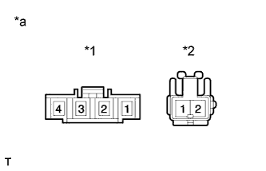

REAR SEAT CUSHION HEATER (for 60/40 Split Slide Walk-in Seat Type LH Side) > INSPECTION |
| 1. INSPECT REAR SEAT CUSHION HEATER ASSEMBLY |
|  |
Check the seat cushion heater.
Measure the resistance according to the value(s) in the table below.
| Tester Connection | Condition | Specified Condition |
| A-1 - B-1 | Seat cushion heater temperature 20°C (68°F) | 3.4 to 4.2 Ω |
| A-4 - B-2 | ||
| A-1 - A-4 | ||
| A-2 - A-3 | 8 to 12 kΩ |
| *1 | Connector A |
| *2 | Connector B |
| *a | Component without harness connected (Front Seat Cushion Heater) |